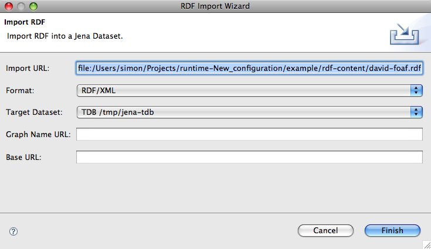

It's important when developing and testing SPARQL queries to be able to do so against reasonable test data. While it would be possible to store, and version, the actual Jena store itself this is impractical for a number of reasons. For a start it isn't possible to edit the store in a simple way and it's not easy to produce deltas for a binary store. So JenaTool allows the developer to create and store test data in text files in one of a number of representations (see RDF Content) and import this data into a store.
RDF content can be imported in one of two ways, the first is to right-click
on an RDF resource in the workspace and select the Jena->Quick Import
context action. The second, and Eclipse-centric way is to use the
standard File->Import... menu and follow the usual process.
The following shows the standard Eclipse import dialog with the new
Jena category opened.
Once you select the right import action you'll see the following RDF specific dialog, the details of the fields are described below.
